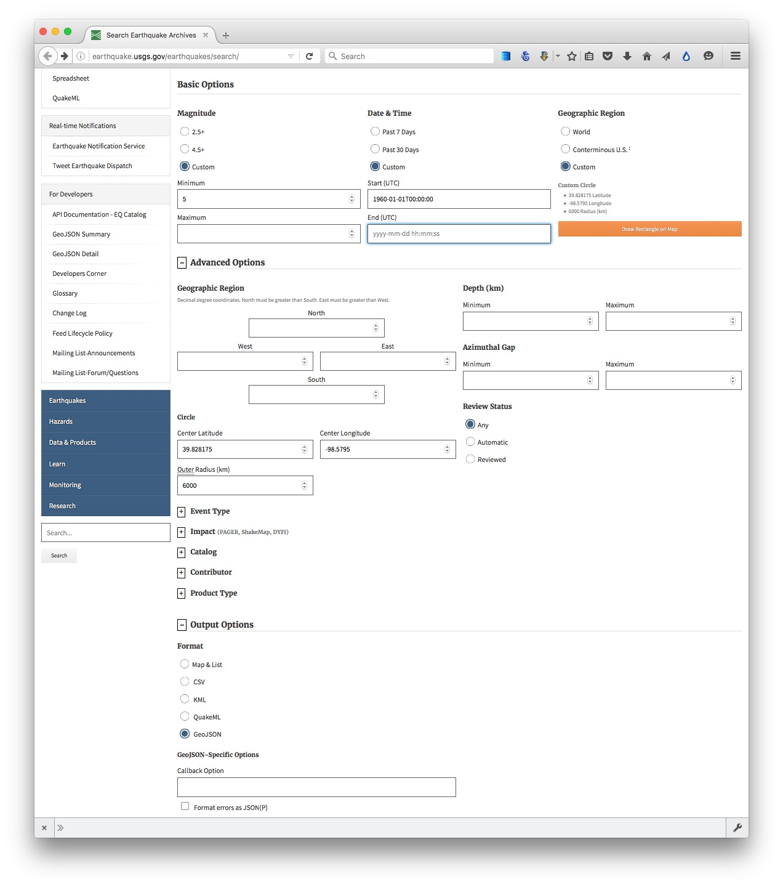
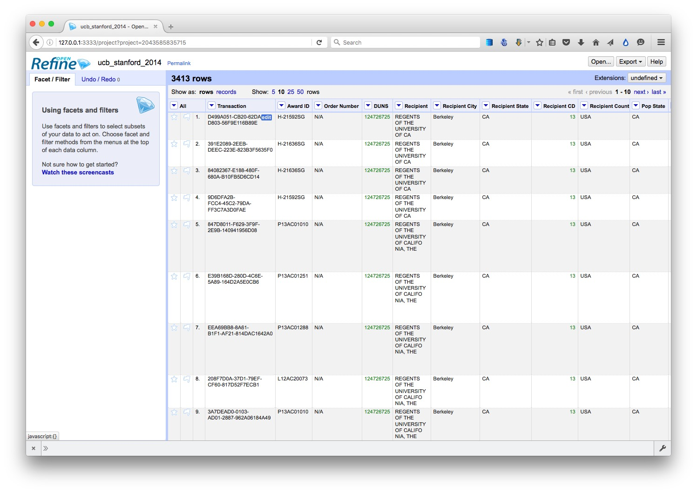
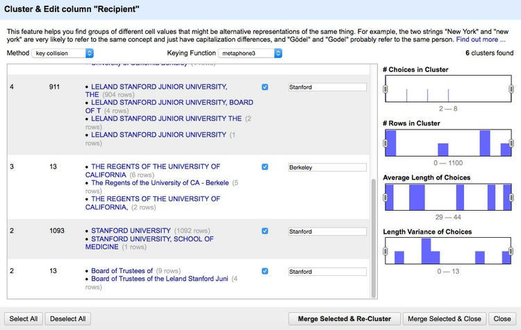
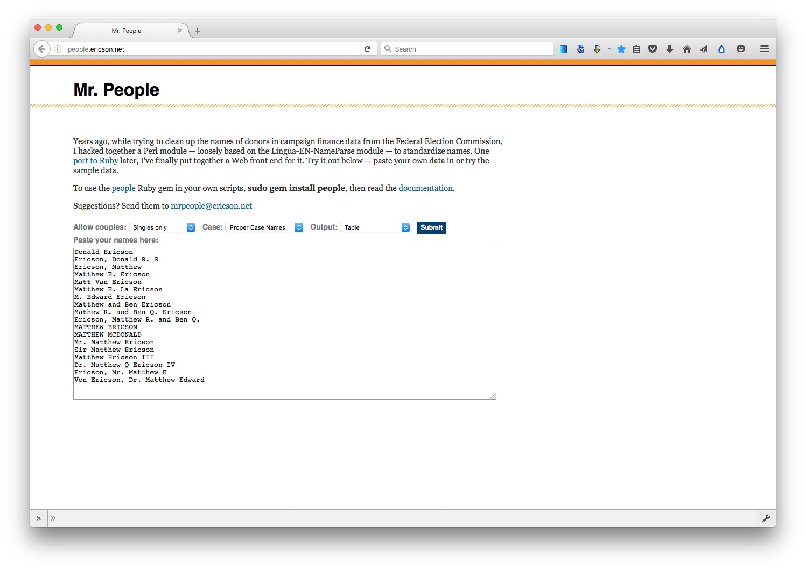

Acquiring, cleaning and formatting data
Not so many years ago, data was hard to obtain. Often journalists would have to painstakingly compile their own datasets from paper records. The Internet has changed the game. Today, many government and other public databases can now be queried online, and the results of those searches downloaded. Other datasets can be downloaded in their entirety.
The main problem today is usually not finding relevant data, but in working out whether it can be trusted, spotting and correcting errors and inconsistencies, and getting it in the right format for analysis and visualization.
In this class, we will cover some tips and tricks for finding the data you need online, getting it onto your computer, and how to recognize and clean “dirty” data. We will also review some common data formats, and learn how to convert from one to another.
The data we will use
Download the data for this class from here, unzip the folder and place it on your desktop. It contains the following folders and files:
cleaning Folder containing:
oil_production.csvData on oil production by world region from 2000 to 2014, in thousands of barrels per day, from the U.S. Energy Information Administration.ucb_stanford_2014.csvData on federal government grants to UC Berkeley and Stanford University in 2014, downloaded from USASpending.gov.
scraping Folder containing:
urls.xlsSpreadsheet with a list of urls, for use in web scraping exercise.
geocoding Folder containing:
sf_test_addresses.tsvText file containing a list of 100 addresses in San Francisco.sf_addresses_short.tsvThe first 10 addresses from the previous file.refine-geocoder.jsonA script in JSON format that we will use to automate geocoding.
Understand common data formats
CSV is just one variant of a “delimited” text file, in which the fields or columns in a table of data are separated by commas (hence comma-separated values, or CSV) or another character such as a tab. You may also encounter “fixed width” text files, in which the fields are lined up, with each located a specified number of characters across each row. Spreadsheets such as Libre Office Calc or Microsoft Excel can import fixed-width files, which you can then export in a delimited format for use in other software.
Text files are great for transferring data from one software application to another during analysis and visualisation, but other formats that are easier for machines to read are typically used when transferring data between computers online.
JSON, or JavaScript Object Notation, treats data as a series of “objects,” which begin and end with curly brackets. Each object in turn contains a series of name-value pairs. There is a colon between the name and value in each pair, and the pairs separated by commas.
Here, for example, are the first few rows of a simple dataset relating to a controversial theory claiming that the extent to which a country has developed a democratic political system is driven largely by the historical prevalence of infectious disease:
[{"country":"Bahrain","income_group":"High income: non-OECD","democ_score":45.6,"infect_rate":23},
{"country":"Bahamas, The","income_group":"High income: non-OECD","democ_score":48.4,"infect_rate":24},
{"country":"Qatar","income_group":"High income: non-OECD","democ_score":50.4,"infect_rate":24},
{"country":"Latvia","income_group":"High income: non-OECD","democ_score":52.8,"infect_rate":25},
{"country":"Barbados","income_group":"High income: non-OECD","democ_score":46,"infect_rate":26}]
XML, or Extensible Markup Language, is another format often used to move data around online. For example, the RSS feeds through which you can subscribe to content from blogs and websites using a reader such as Feedly are formatted in XML.
In XML data is structured by enclosing values within “tags,” similar to those used to code different elements on a web page in HTML. Here is that same data in XML format:
<?xml version="1.0" encoding="UTF-8"?>
<rows>
<row country="Bahrain" income_group="High income: non-OECD" democ_score="45.6" infect_rate="23" ></row>
<row country="Bahamas, The" income_group="High income: non-OECD" democ_score="48.4" infect_rate="24" ></row>
<row country="Qatar" income_group="High income: non-OECD" democ_score="50.4" infect_rate="24" ></row>
<row country="Latvia" income_group="High income: non-OECD" democ_score="52.8" infect_rate="25" ></row>
<row country="Barbados" income_group="High income: non-OECD" democ_score="46" infect_rate="26" ></row>
</rows>
Search for data on the web
Often, your starting point in searching for data will be Google. Simply combining a few keywords in a Google search with “data” or “database” may be enough to find what you need, but it can be worth focusing your queries using Google’s advanced search:
(Source: Google)
The options to search by site or domain and file type can be especially useful when looking for data. For example, the U.S. Geological Survey is the best source of data on earthquakes and seismic risk, so when searching for this information, specifying the domain usgs.gov would be a good idea. You can make the domains as narrow or broad as you like: .edu, for instance, would search the sites of all U.S. academic institutions using that top-level domain; ucsc.edu would search the web pages of this university only.
The file type search offers a drop-down menu, with the options including Excel spreadsheets, and Google Earth KML and KMZ files. These are common data formats, but you are not limited to those on the menu. In a regular Google search, type a space after your search terms followed by filetype:xxx, where xxx is the suffix for the file type in question. For example, dbf will look for database tables in this format. Combining file type and domain searches can be a good way to find data an agency has posted online — some of which may not otherwise be readily accessible.
One common data format doesn’t show up file type searches. Geographical data is often made available as “shapefiles.” Because they consist of multiple files that are usually stored in compressed folders, shapefiles can’t readily be searched using a file type suffix, but they can usually be found by adding the terms “shapefile” or “GIS data” to a regular Google search.
Search online databases
Many important public databases can be searched online, and some offer options to download the results of your queries. Most of these databases give a simple search box, but it’s always worth looking for the advanced search page, which will offer more options to customize your search. Here, for example, is the advanced search page for ClinicalTrials.gov:

(Source: ClinicalTrials.gov)
When you start working with a new online database, take some time to familiarize yourself with how its searches work: Read the Help or FAQs, and then run test searches to see what results you obtain. Here, for example, is the “How To” section of ClinicalTrials.gov.
Many online databases can be searched using Boolean logic, using the operators AND, OR and NOT to link search terms together. So find out how a particular database uses Boolean logic — and the default settings that it will use if you list search terms without any Boolean operators.
Putting search terms in quote marks often searches for a specific phrase. For example, searching for “heart attack” on ClinicalTrials.gov will give only give results in which those two words appear together; leaving out the quote marks will include any trial in which both words appear.
Also find out whether the database allows “wildcards,” symbols such as * or % that can be dropped into your search to obtain results with variations on a word or number.
Look for download options — and know when you are hitting the wall
Having run a search on an online database, you will usually want to download the results, so look for the download links or buttons.
A common problem with online databases, however, is that they may impose limits on the number of results that are returned on each search. And even when a search returns everything, there may be a limit on how many of those results can be downloaded to your own computer.
If broad searches on a database keep returning the same number of results, that is a sign that you are probably running up against a search limit, and any download will not contain the complete set of data that you are interested in. However, you may be able to work out ways of searching to obtain all of the data in chunks.
Download the entire database
Downloading an entire database, where this is allowed, frees you from the often-limited options given on an online advanced search form: You can then upload the data into your own database software, and query it in any way that you want. We will learn how to do this in Week 5.
So always look for ways to grab all of the data. One trick is to run a search on just the database’s wildcard character, or with the query boxes left blank. If you do the latter at ClinicalTrials.gov, for instance, your search will return all of the trials in the database, which can then be downloaded using the options at the bottom of the results page.
Other databases have an online search form, but also have a separate link from where data to be downloaded in its entirety, usually as a text file or series of text files. One example is Bioresearch Monitoring Information System, which lists doctors and other researchers involved in testing experimental drugs being considered for marketing approval by the Food and Drug Administration. It can be searched online here, but can also be downloaded in full from here.
Note that large text files are again often stored in compressed folders, so may be invisible to a Google search by file type.
Automate downloads of multiple data files
Often data doesn’t reside in a single searchable database, but instead exists online as a series of separate files. In such cases, clicking on each link is tedious and time-consuming. But you can automate the process using the DownThemAll! Firefox add-on.
To illustrate, go to Gapminder’s data catalog, and select All indicators. The webpage now includes links to more than 500 downloadable spreadsheets. Right-click and select DownThemAll!....
At the dialog box, you can choose where to save the files, and to filter the links to select just the files you want. There are check boxes to download documents or images, and so on. In this case, all the spreadsheet downloads contain the text xls, defining the format of the download from Google Sheets, so Fast Filtering using the term xls will correctly identify these downloads:

Extract data from tables on the web
On other occasions, data may exist in tables on the web. Copying and pasting data from web tables can be tricky, but the Table2Clipboard Firefox add-on simplifies the process.
Before using the add-on, select Tools>Table2Clipboard and choose the following options under the CSV tab:

This will ensure that each row in the extracted data is put on a new line, and each column is separated by a tab.
To illustrate what Table2Clipboard does, go to The International Disaster Database, and navigate to Disaster List. At the search form, select 1990 to 2015 under Period, United States of America under Country, Storm under Disaster type, then holding down the Ctrl (Windows) or Command/⌘ (Mac) key, select the three variables giving the number of people affected, and the value of the damage caused. Then click Search.

(Source: The International Disaster Database)
When the table of data appears, right-click anywhere within it and select Table2Clipboard>Copy whole table.
You can now paste the data into an empty text file, or into a spreadsheet.
Manipulate urls to expose the data you need
As you search for data using web query forms, make a habit of looking at what happens to the url. Often it will contain patterns detailing the search you have run, and it will be possible to alter the data provided by manipulating the url. This can be quicker than filling in search forms. In some cases it may even reveal more data than default search options will allow.
To illustrate how this works, go to the ISRCTN clinical tral registry, and then navigate to the advanced search page. Enter cancer under Condition and note that more than 1,850 trials are returned.
The url should now have changed to the following:
http://www.isrctn.com/search?q=&filters=condition%3Acancer&searchType=advanced-search
Notice that the default is to display 10 results per page, and then change the view to see the maximum of 100 trials allowed by the dropdown menu. The url should now read:
http://www.isrctn.com/search?pageSize=100&sort=&page=1&q=&filters=condition%3Acancer&searchType=advanced-search
Now change that url to:
http://www.isrctn.com/search?pageSize=2000&sort=&page=1&q=&filters=condition%3Acancer&searchType=advanced-search
Having done so, all of the registered clinical trials involving cancer should now be displayed on a single page. We could now use DownThemAll! to download all of the individual web pages describing each of these trials, or we could use this url as the starting point to scrape data from each of those pages.
Use application programming interfaces (APIs)
Websites like the ISRCTN clinical trial registry are not expressly designed to be searched by manipulating their urls, but some organizations make their data available through APIs that can be queried by constructing a url in a similar way. This allows websites and apps to call in specific chunks of data as required, and work with it “on the fly.”
To see how this works, go to the U.S. Geological Survey’s Search Earthquake Archives page, where we will search for all earthquakes with a magnitude of 5 or greater that occured witin 6,000 kilometers of the geographic center of the contiguous United States, which this site tells us lies at a latitude of 39.828175 degrees and a longitude of -98.5795 degrees. We will initially ask for the data in a format called GeoJSON (a variant of JSON, a common format used to trasmit data over the web). Enter 1960-01-01T00:00:00 under Start for Date & Time boxes so that we obtain all recorded earthquakes from the beginning of 1960 onward. The search form should look like this:

(Source: U.S. Geological Survey)
You should recieve a quantity of data at the following url:
http://earthquake.usgs.gov/fdsnws/event/1/query?starttime=1960-01-01T00:00:00&latitude=39.828175&longitude=-98.5795&maxradiuskm=6000&minmagnitude=5&format=geojson&orderby=time
See what happens if you append -asc to the end of that url: This should sort the the earthquakes from oldest to newest, rather than the default of newest to oldest. Here is the full documentation for querying the earthquake API by manipulating these urls,
Now remove the -asc and replace geojson in the url with csv. The data should now download in CSV format.
Scrape data from the web
Sometimes you will need to compile your own data from information that is spread across a series of webpages, or maintained in a database that doesn’t allow simple downloads of the data or API access. This is where web scraping comes in.
Using programming languages such as Python, it is possible to write scripts that will pull data down from many webpages, or query web search forms to download an entire database piece by piece.
Web scraping by coding is beyond the scope of this class. However, the underlying process is simple to understand: Identify the patterns you would need to follow if collecting the data manually, then write a program to automate the process and write the results to a data file. That often means experimenting to reveal the most efficient way of exposing all of the data you require.
We have already been performing some of the elements of web scraping, by manipulating urls on web search forms and then downloading the individual links that are returned en masse.
There are a number of tools that allow non-programmers to scrape data from the web. These include OutWit Hub and the Windows-only Helium Scraper. In today’s class, we will use Import.io and Kimono.
To demonstrate webscraping, we will download data on disciplinary actions against doctors in the state of New York.
Navigate to this page, which is the start of the list. Then click on the Next Page link, and see that the url changes to the following:
http://w3.health.state.ny.us/opmc/factions.nsf/byphysician?OpenView&Start=30
Notice that the first entry on this list is actually the last entry on the previous one, so this url is the next page with no duplicates:
http://w3.health.state.ny.us/opmc/factions.nsf/byphysician?OpenView&Start=31
Experiment with different numbers at the end of the url until you find the end of the list. As of writing, this url exposed the end of the list, revealing that there were 7294 disciplinary actions in the database.
http://w3.health.state.ny.us/opmc/factions.nsf/byphysician?OpenView&Start=7290
Click on the link for the last doctor’s name, and notice that data on each disciplinary action, plus a link to the official documentation as a PDF, are on separate web pages. So we need to cycle through all of these pages to grab data on every disciplinary action.

The first step is to cycle through the entire list, grabbing all of the urls for the individual plages.
The best way of doing this in Import.io is to set up a scrape from all of the urls that define the list. In a spreadsheet, copy the base url down about 250 rows, then put the numbers that define the first three pages in the first three cells of the next column:
Select those three cells, then move the cursor to the bottom right-hand corner until it becomes a cross, and double-click to copy the pattern down the entire column.
In the first cell in the third column, type the following formula:
=concatenate(A1,B1)
Hit return, and copy this formula down the column to give the urls we will use to scrape the list. To save time in class, I have already made this spreadsheet, urls.xls for you to use. It is in the folder cleaning.
Open Import.io, and you should see a screen like this:
Click the pink New button to start setting up a scraper, and at the dialog box select Start Extractor:
You can close the tutorial video that appears by clicking the OK, got it! button. Enter the url for the first page of the list in the search box, and then move the slider on ON
Write name in the box at top left, replacing the default my_column, and click on the first link under Physician Name. At the dialog box that appears, tell Import.io that your table will contain Many rows.
Import.io will now grab the text and links in a column called name. This is all we need for the first phase of the scrape, so click the DONE button and select a name for the API, such as ny_doctors, and click PUBLISH.
At the next window, select Bulk Extract under How would you like to use this API? and paste into the box the urls from the spreadsheet:
Click Save URLS and then Run queries and the scrape should begin. It will take a couple of minutes to process all 244 urls. If any fail, click on the warning message to retry.
Now click on the Export button and select HTML to export as web page, which should look like this. Save it on your desktop, and open in a browser. The column name now contains all the urls we need for the second stage of the scrape:
Click the New button to set up the second phase of the scrape, and again Start Extractor. Enter the second url from your HTML table, to select a named doctor, rather than a practice. Call the column first name, click on the doctor’s first name, and this time tell Import.io that your scrape will have Just one row — because each of the pages we are about to scrape contains data on one disciplinary action.
Click + NEW COLUMN and repeat for the doctor’s last name and the other fields in the data. Make sure to click on the empty box for License Restrictions, so the scrape does grab this data where it exists, and the link to the PDF document. When you are done, the screen should look like this:
Click DONE, select a name for the API, such as ny_orders, and click PUBLISH.
Again select Bulk Extract, and paste into the box the entire column of urls from your html table. You can do this is Firefox using Table2Clipboard, using its Select column option. Remember to delete the column header name from the list of urls before clicking Save URLs and Run queries.
Once the scrape has completed, clock the Export button and select Spreadhseet to export as a CSV file.
PDFs: the bane of data journalism
Some organizations persist in making data available as PDFs, rather than text files, spreadsheets or databases. This makes the data hard to extract. While you should always ask for data in a more friendly format — ideally a CSV or other simple text file — as a data journalist you are at some point likely to find yourself needing to pull data out of a PDF.
For digital PDFs, Tabula is a useful data extraction tool — however it will not work with PDFs created by scanning the original document, which have to be interpreted using Optical Character Recognition (OCR) software.
Also useful is the online service Cometdocs. While it is a commercial tool, members of Investigative Reporters and Editors can obtain a free account. Cometdocs can read scanned PDFs, however its accuracy will vary depending on how well the OCR works on the document in question.
Adobe Acrobat Pro will also perform OCR on scanned PDFs.
Here is a useful set of resources detailing more advanced tools for dealing with hard-to-parse PDFs.
Can I trust this data?
Having identified a possible source of data for your project, you need to ask: Is it reliable, accurate and useful? If you rush into analysis or visualization without considering this question, your hard work may be undermined by the maxim: “Garbage In, Garbage Out.”
The best rule of thumb in determining the reliability of a dataset is find out whether it has been used for analysis before, and if so, by whom. If a dataset was put together for an academic study, or is actively curated so it can be made available for experts to analyse, you can be reasonably confident that it is as complete and accurate as it can be — the U.S. Geological Survey’s earthquake data is a good example.
While in general you might be more trusting of data downloaded from a .gov or .edu domain than something found elsewhere on the web, don’t simply assume that it is reliable and accurate. Before using any dataset, do some background research to find out how it was put together, and whether it has been rigorously checked for errors. If possible, try to speak to the people responsible for managing the database, and any academics or other analysts who have used the data. They will be your best guide to a dataset’s strengths and weaknesses.
Even for well-curated data, make a point of speaking with experts who compile it or use it, and ask them about the data’s quirks and limitations. From talking with experts on hurricanes, for example, I know not to place too much trust in data on North Atlantic storms prior to about 1990, before satellite monitoring was well developed — even though the data available from the U.S. National Oceanic and Atmospheric Adminstration goes back to 1851.
Always ask probing questions of a dataset before putting your trust in it. Is this data complete? Is it up-to-date? If it comes from a survey, was it based on a representative sample of people who are relevant to your project? Remember that the first dataset you find online may not be the most relevant or reliable.
Recognize dirty data
In an ideal world, every dataset we find would have been lovingly curated, allowing us to start analysing and visualising without worrying about its accuracy.
In practice, however, often the best available data has some flaws, which may need to be corrected as far as is possible. So before starting to work with a new dataset, look for common errors.
Look for glitches in the alignment of columns, which may cause data to appear in the wrong field.
For people’s names, look for variations in spelling, format, initials and accents, which may cause the same person to appear in multiple guises. Similar glitches may affect addresses, and any other information entered as text.
Some fields offer some obvious checks: if you see a zip code that contains anoything other than five or nine digits, for instance, you know it must be wrong.
Dates can also be entered incorrectly, so it’s worth scanning for those that fall outside the timeframe that should be covered by the data.
Also scan numbers for any obvious outliers. These values are worth checking out. Are they correct, or did someone misplace a decimal point or enter a number in the wrong units?
Other common problems are white spaces before and after some entries, which may need to be stripped out.
At all stages of your work, pay attention to zeros. Is each one actually supposed to represent zero, or should the cell in fact be empty? Take particular care exporting data from one software tool and importing to another, and check how empty cells, or “nulls,” have been handled.
Clean and process data with Open Refine
Checking and cleaning “dirty” data can be the most labor intensive part of many data journalism projects, but Open Refine (formerly Google Refine) can streamline the task — and also create a reproducible script to quickly repeat the process on data that must be cleaned and processed in the same way.
When you launch Open Refine, it opens in your web browser. However, any data you load into the program will remain on your computer — it does not get posted online.
The opening screen should look like this:
Reshape data from wide to long format
Click the Browse button and navigate to the file oil_production.csv. Click Next>>, and check that data looks correct:
Open Refine should recognize that the data is in a CSV file, but if not you can use the panel at bottom to specify the correct file type and format for the data. If your file has some initial header lines that need to be ignored, Open Refine can deal with that, too.
Make sure that the box marked Parse cell text into numbers, dates, ... is checked. Numbers and dates should appear in green, plain text in black. Also change the Project name to remove the csv.
When you are satisfied that the data has been read correctly, click the Create Project >> button at top right. The screen should now look like this:
As you can see, the data is in wide format, with values for oil production by region organized in columns, one for each year. To convert this to long format, click on the small downward-pointing triangle for the first of these year columns, and select Transpose>Transpose cells across columns into rows.
Fill in the dialog box as below, making sure that From Column and To Column are highlighted correctly, that the Key column and Value column have been given appropriate names, and that Fill down in other columns is checked. (Failing to do check this box will mean that the region names each will only appear once in the reshaped data, rather than being copied down to appear next to the corresponding data for year and oil production.)
Click Transpose and then the 50 rows link, to see the first 50 rows of the reshaped data:
Click the Export button at top right and you will see options to export the data in a variety of file types, including Comma-separated value and Excel spreadsheet.
Clean and process dirty data
Click the Open Refine logo at top left to return to the opening screen. Create a new project from the file ucb_stanford_2014.csv:

Again, each field/column has a button with a downward-pointing triangle. Click on these buttons and you get the option to create “facets” for the column, which provide a powerful way to edit and clean data.
Click on the button for the field Recipent City, and select Facet>Text facet. A summary of the various entries now appears in the panel to the left:

The numbers next to each entry show how many records there are for each value.
We can edit entries individually: Select Veterans Bureau Hospi, which is clearly not a city, click on the Edit link, change it to Unknown. (If cleaning this data for a real project, we would need to check with an external source to get the actual city for this entry.)
Another problem is that we have a mixture of cases, with some entries in Title or Proper Case, some in UPPERCASE. We can fix this back in the field itself. Click its button again and select Edit cells>common transforms>To titlecase.
Now notice that we apparently have duplicate entries for Berkeley, Palo Alto and Stanford. This is the result of trailing white space after the city names for some entries. Select Edit cells>common transforms>Trim leading and trailing whitespace and notice how the problem resolves:

Having cleaned this field, close the facet by clicking the cross at top left.
Now create a text facet for the field Recipient:

What a mess! The only possibilities are Stanford or Berkeley, yet there are multiple variants of each, many including Board of Trustees for Stanford and Regents of for UC Berkeley.
First, manually edit Interuniveristy Center for Japanese Language to Stanford, which is where this center is based.
We could contrinute editing manually, but to illustrate Open Refine’s editing functions click on the Cluster button. Here you can experiment with different clustering algorithms to edit entries that may be variants of the same thing. Select key collision and metaphone3, then start checking the clusters and renaming them as Berkeley or Stanford as appropriate:

Click Merge Selected & Close and the facet can then be quickly edited manually:

Often we may need to convert fields to text, numbers or dates. For example, click on the button for Award Date and select Edit cells>common transforms>To date and see that it changes from a string of text to a date in standard format.
Notice the field Award amount, which is a value in dollars. Negative values are given in brackets. Because of these symbols, the field is being
recognized as a string of text, rather than a number. So to fix this problem, we have to remove the symbols.
Select Edit colum>Add column based on this column... and fill in the dialog box as follows:

Here value refers to the value in the original column, and replace is a function that replaces characters in the value. We can run several replace operations by “chaining” them together.
In this expression we are replacing the $ symbols, the commas separating thousands, and the closing brackets with nothing; we are replacing the opening brackets with a hyphen to designate negative numbers.
Click OK and the new column will be created. Note that it is still being treated as text, but that can be corrected by selecting Edit cells>common transforms>To number.
This is just one example of many data transformation functions that can be accessed using Open Refine’s expression language, called GREL. Learning these functions can make Open Refine into a very powerful data processing tool. Study the “Further reading” links for more.
Open Refine’s facets can also be used to inspect columns containing numbers. Select Facet>Numeric facet for the new field. This will create a histogram showing the distribution of numbers in the field:

We can then use the slider controls to filter the data, which is good for examining possible outliers at the top of bottom of the range. Notice that here a small number of grants have negative values, while there is one grant with a value of more than $3 billion from the National Science Foundation. This might need to be checked out to ensure that it is not an error.
While most of the data processing we have explored could also be done in a spreadsheet, the big advantage of Open Refine is that we can extract a “pipeline” for processing data to use when we obtain data in the same format in future.
Select Undo / Redo at top left. Notice that clicking on one of the steps detailed at left will transform the data back to that stage in our processing. This means you don’t need to worry about making mistakes, as it’s always possible to revert to an earlier state, before the error, and pick up from there.
Return to the final step, then click the Extract button. At the dialog box, check only those operations that you will want to perform in future (typically generic transformations on fields/columns, and not correcting errors for individual entries). Here I have unchecked all of the corrections in the text facets, and selected just those operations that I know I will want to repeat if I obtain data from this source again:

This will generate JSON in the right hand panel that can be copied into a blank text file and saved.
To process similar data in future. Click the Apply button on the Undo / Redo tab, paste in the text from this file, and click Perform Operations. The data will then be processed automatically.
When you are finished cleaning and processing your data, click the Export button at top right to export as a CSV file or in other formats.
Open Refine is a very powerful tool that will reward efforts to explore its wide range of its functions for manipulating data, and to learn its expression language. See the Further Reading for more.
Geocode addresses with Open Refine
To illustrate its potential, we will use Open Refine to produce latitude and longitude co-ordinates from a list of addresses — a process known as “geocoding” that is often required before data can be put onto a map.
There are several geocoding APIs, which can be accessed in various ways. The number of requests allowed per day and the terms of use vary from service to service: Google’s free service, for instance, allows each user to geocode 2,500 addresses per day, and specifies that the resulting coordinates may only be used to make a Google Map.
Because of this restriction, we will instead use the services offered by Microsoft’s Bing Maps, and MapQuest (which is based on OpenStreetMap’s Nominatim service), to geocode this sample of addresses in San Francisco.
These geocoding APIs can both be accessed from Open Refine. Here is how to geocode addresses from Open Refine using the Bing API:
You will need a Bing Maps API key. To obtain that, follow the steps here. If you don’t already have a Microsoft Account, you will first need to create one.
Create a new Open Refine project by importing a text file containing complete addresses in one column, with the heading address. Our test data is already in this format; use sf_test_addresses_short.txt for this exercise.
From the address column, select Edit column>Add column by fetching URLs..., call the column bing_json and use the following expression:
"http://dev.virtualearth.net/REST/v1/Locations?q=" + escape(value, "url") + "&key=BingMapsKey"
Note that you will have to enter your own Bing API key in place of BingMapsKey. Also, set the Throttle delay to 500 milliseconds for faster processing. This expression constructs a URL that will query the Bing geocoding API and return data for the address in question in JSON format.
From the bing_json column, select Edit column>Add column based on this column..., call the column bing_lat_lon and use this expression to extract the latitude and longitude from the JSON returned by the API:
with(value.parseJson().resourceSets[0].resources[0].point.coordinates, pair, pair[0] +", " + pair[1])
Split the bing_lat_lon column into to two columns by selecting Edit column>Split into several columns, then rename these columns bing_latitude and bing_longitude.
From the bing_json column, select Edit column>Add column based on this column..., call the column bing_confidence and use this expression to extract the Bing API’s confidence in the accuracy of its geocoding:
with(value.parseJson().resourceSets[0].resources[0].confidence, v, v)
From the bing_json column, select Edit column>Add column based on this column..., call the column bing_type and use this expression to extract the type of place that the Bing API has geocoded:
with(value.parseJson().resourceSets[0].resources[0].entityType, v, v)
For a full address, this should return Address when the geocoding has been successful.
Finally, delete the bing_json column by selecting Edit column>Remove column.
It is now possible to extract JSON code that will allow you repeat these steps on any data in the same format.
Here I have created an Open Refine geocoder that uses both the Bing and Mapquest Open APIs, with instructions on how to use it. The geocoding folder contains the JSON from my Open Refine geocoder. So you. To use it you will also need a Mapquest API key, which you can obtain from here.
Standardize names with Mr People
For processing names from a string of text into a standardized format with multiple fields, you may wish to experiment with Mr People, a web app made by Matt Ericson, a member of the graphics team at The New York Times.

(Source: Mr People)
It takes a simple list of names and turns them into separate fields for title, first name, last name, middle name and suffix.
Mr People can save you time, but it is not infallible — for instance, it may give errors where people have multiple titles or suffixes, such as “MD, PhD.” So always check the results before moving on to further analysis and visualisation.
Convert from one data format to another
Mr Data Converter is a web app made by Shan Carter, formerly of the graphics team at The New York Times, now with Google, that makes it easy to convert data from a spreadsheet or delimited text file to JSON or XML.
Copy the data from a CSV or tab-delimited text file and paste it into the top box, select the output you want, and it will appear at the bottom. You will generally want to select the Properties variants of JSON or XML.
You can then copy and paste this output into a text editor, and save the file with the appropriate suffix (xml, json).

(Source: Mr Data Converter)
To convert data from JSON or XML into text files, use Open Refine. First create a new project and import your JSON or XML file. Then use the Export button and select Tab-separated value or Comma-separated value to export as a text file.
Further reading/resources
Paul Bradshaw. Scraping For Journalists
Dan Nguyen. The Bastards Book of Ruby
I use R or Python rather than Ruby, but this book provides a good introduction to the practice of web scraping using code, and using your browser’s web inspector to plan your scraping approach.